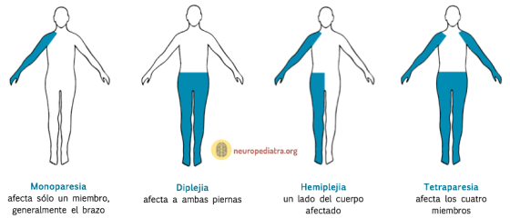

Combinación de Ia ataxia con espástica o atetósica: afecta a varias estructuras encefálicas.
Según el miembros afectados puede ser:
- Monoplejía (afecta a un miembro, hemiplejía (afecta a Ia mitad del cuerpo)
- diplejía (afecta a las dos piernas)
- triplejía (afecta a un brazo y Ias piernas)
- tetraplejía (afecta a las cuatro extremidades).

Según el grado de dependencia está determinado por la extensión de la lesión cerebral:
- Grave. Carece de autonomía para la realización de todas o casi todas las actividades de la vida diaria (vestirse, comer, asearse), por lo que precisa de la ayuda de otra persona para poder vivir. Necesitará una silla de ruedas o un equipo especial.
- Moderada. Necesita apoyo de una tercera persona para determinadas actividades y/o ayudas técnicas u ortopédicas como un bastón.
- Leve. Es totalmente independiente, aunque parece torpe cuando realiza alguna actividad.